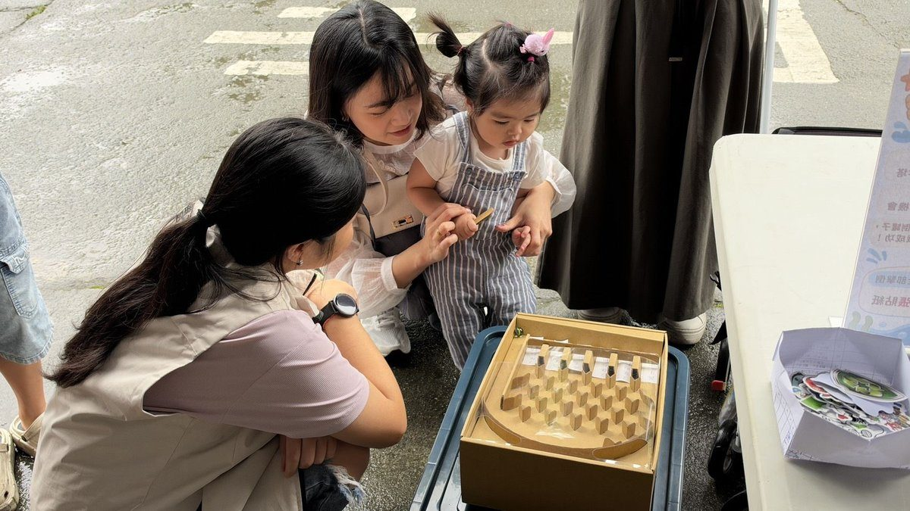

花蓮光復親子館三週年 祖孫三代跨世代共玩傳承阿美文化

可樂電子報小編/編輯
為迎接光復親子館營運三週年，花蓮縣政府與自114年起承辦場館營運的社團法人臺灣果多教育發展協會，今（7）日上午在光復親子館舉辦「跨世代童玩，作夥來！」主題市集闖關活動，把阿美族傳統文化、懷舊古早童玩與現代育兒體驗擺在同一座廣場，邀請在地家庭與社區長輩一起下場玩，也讓孩子在遊戲中認識在地文化與傳統智慧。

活動串聯在地社福機構、部落組織與公私部門，把社會福利資源融進一關又一關的遊戲裡，讓原本生硬的宣導變成親子一起完成的任務。家長帶孩子闖關的途中，就能認識早期療育、輔具資源、家庭支持與用電安全等資訊，有疑問也能當場向社工詢問，宣導不再只是發傳單，而是寓教於樂的共融空間。

縣長徐榛蔚高度重視育兒支持政策，考量縣內幼兒家庭的實際需求，責成社會處積極布建親子館及親子據點，減輕家長的育兒負擔。目前全縣已設洄瀾、新秀、吉安、吉安祖孫館、鳳林、光復、玉里、豐濱、瑞穗，加上壽豐親子館共計十處，從北區到南區都能就近找到托育與親子活動的據點，相當方便。

縣府也依各鄉鎮在地需求，發展卓溪鄉卓溪村（芭尼達部落）、萬榮鄉紅葉村（悅付南部落）、秀林鄉文蘭村（文蘭部落）等小型親子據點，也就是部落遊戲屋，未來還規劃在富里鄉多功能中心設點。這些據點多半設在部落活動中心或衛生室，讓偏鄉家庭不必進城，也能帶孩子玩遊戲、談育兒。
活動規劃三大童玩主題區。「原鄉文化童玩區」以竹蜻蜓、檳榔葉鞘拉拉車、草編蚱蜢與天然植物拓印，展現阿美族就地取材的生活智慧；「懷舊經典童玩區」安排彈珠臺、踩高蹺、滾鐵圈、踢罐子、打陀螺與丟沙包，讓長輩分享童年記憶，也讓不同世代玩在一起。許多阿公阿嬤邊教邊笑，直說這些玩具比手機還好玩。

「當代趣味童玩區」則結合幼兒發展探索、特殊視覺體驗、無障礙輔具操作及臺電用電安全宣導，讓親子在互動中學習兒童發展與生活安全。縣府表示，未來將持續結合在地文化與社區資源，讓親子館成為家庭交流、世代共融與社區資源連結的重要據點，也讓每一個育兒家庭都能在家附近獲得支持與照顧。

新聞聯絡人：社會處婦幼科李先生，聯絡電話：(03)8228995#2030。
🌟 掌握花蓮在地第一手資訊・歡迎訂閱追蹤
深度紀實報導、在地精采影音專題，第一時間接收最新消息！